NIET LIVE. Alleen de lokale testversie is gewijzigd. Geen echte betaling, factuur, PDF, Bank/Kas-regel, databaseobject of productiebestand gewijzigd. Staging, JARVIS en bedrijfswebsite zijn ongemoeid.
Open de lokale testversie. Trainer: trainer@example.test. Lid: a@example.test. Wachtwoord voor beide: synthetic. Kies het bijbehorende accounttype. Deze fictieve gegevens staan uitsluitend in tijdelijk servergeheugen op deze laptop. De preview blijft draaien; afsluiten van de server wist de oefeninvoer. Externe API-verzoeken en serviceworkers zijn in deze preview geblokkeerd.
18 unieke tests geslaagd: 14 in de gerichte regressiesuite, plus 4 document-/beeldverificatietests. De suite bevat 90 WebKit-schermchecks over trainer/lid, donker/licht, 320/390/768/844/1400 pixels en portret/landschap. Edge controleert laptop en telefoonformaat, de profieltabs, lidwissel, expliciete builderkeuze, autosave, herladen en opnieuw aanmelden. SQL met fictieve rollen weigert toegang tot een ander lid en onbevoegd zoeken. De documenttests controleren bestaande PDF-generatie en onveranderlijke snapshots.
Financiële tests behandelen betalingen vóór en na maandgrens, deelbetaling, werkelijk achterstallig, credit, annulering en tegenboeking. De browser toont voor dezelfde fictieve oktoberfacturen €0 nog te ontvangen, €0 achterstallig en 0 openstaande facturen, ook na herladen en opnieuw aanmelden. Geen dubbele ontvangst. Dit is browseremulatie, geen fysieke telefoontest.
De extra review vond en herstelde twee navigatiedetails: tabs na financiële details en de selectie van de volgende afspraak. Aanvullende tests voor deze correcties, onverloren profielinvoer bij geannuleerd vertrek en rolgrenzen zijn opnieuw geslaagd. Tijdelijke testselectorfouten zijn gecorrigeerd; geen resterende testfouten in de uitgevoerde controles.
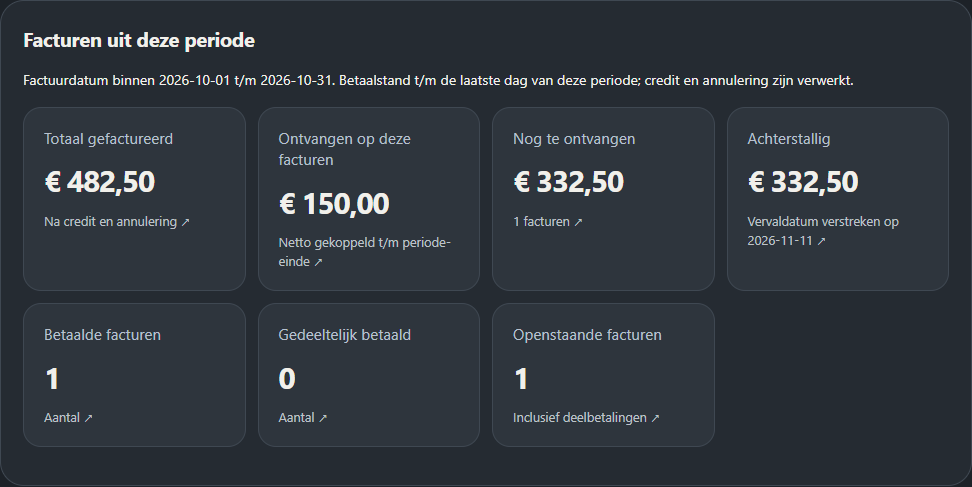
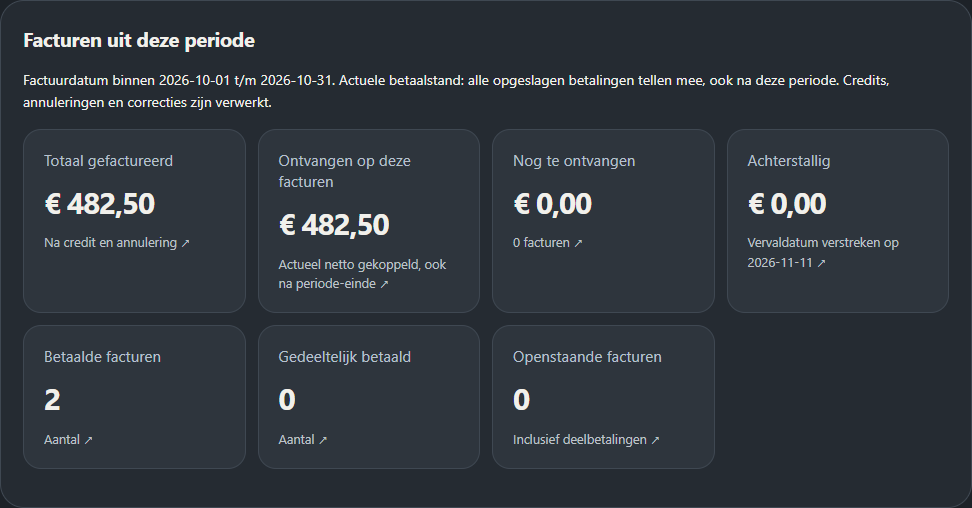
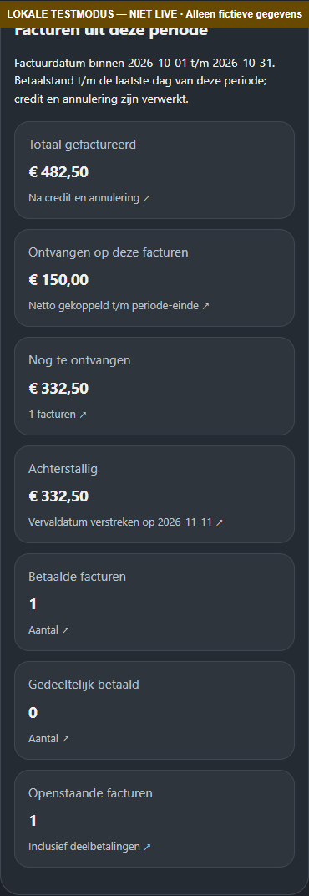
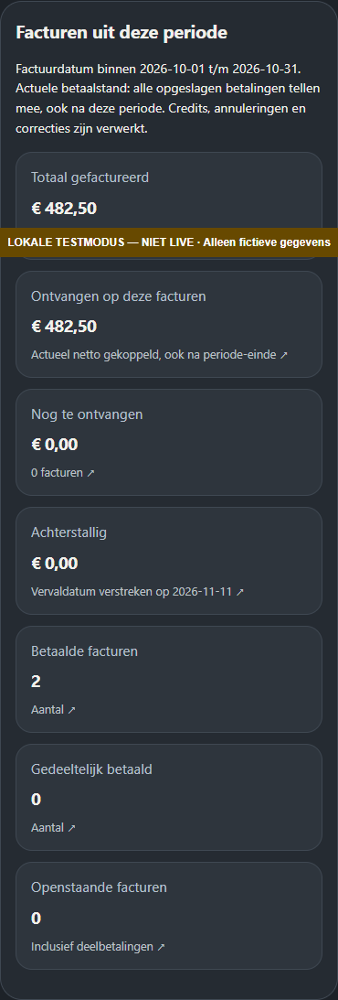
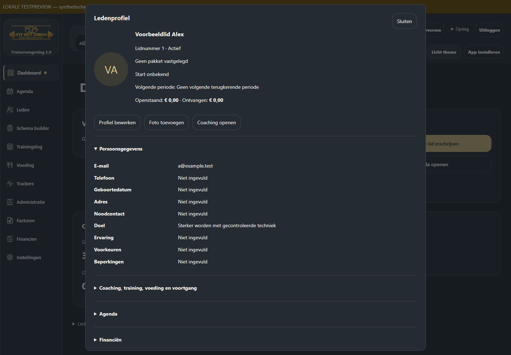
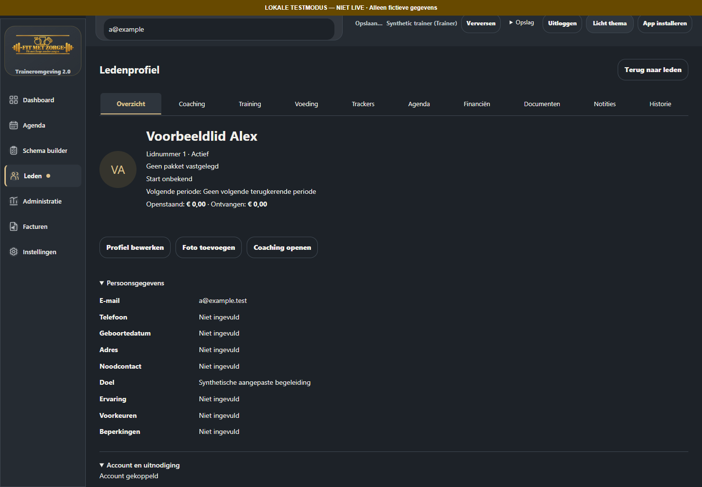
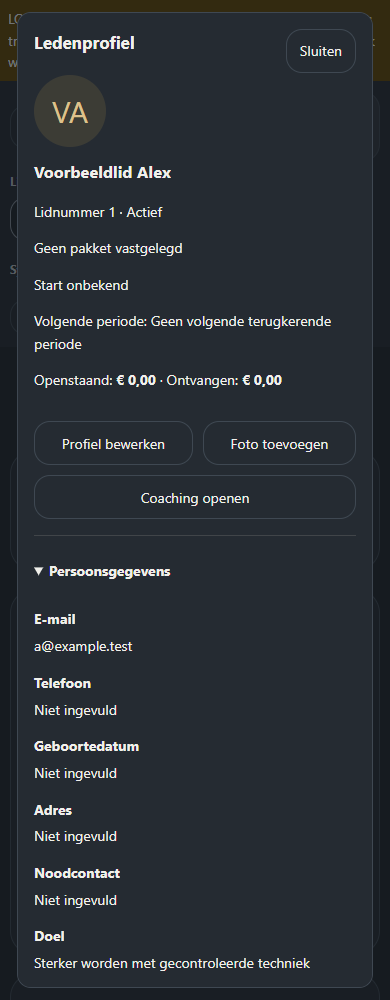
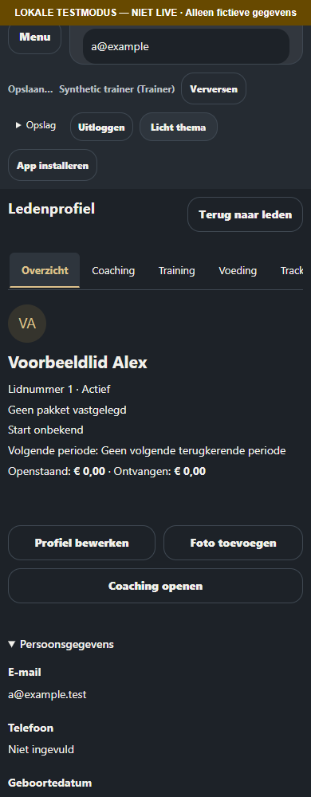
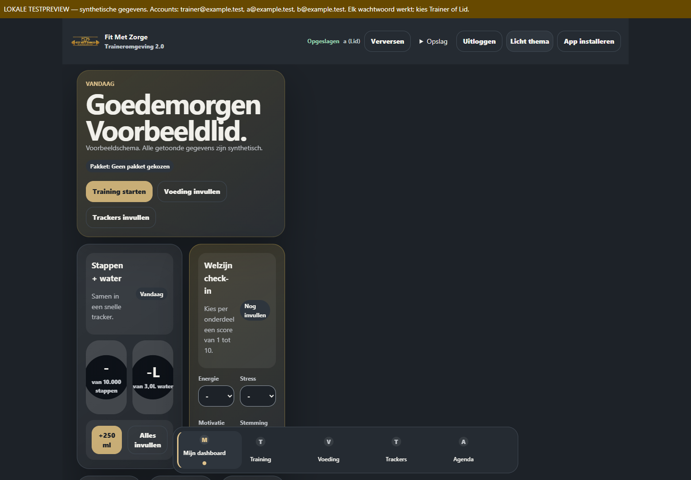
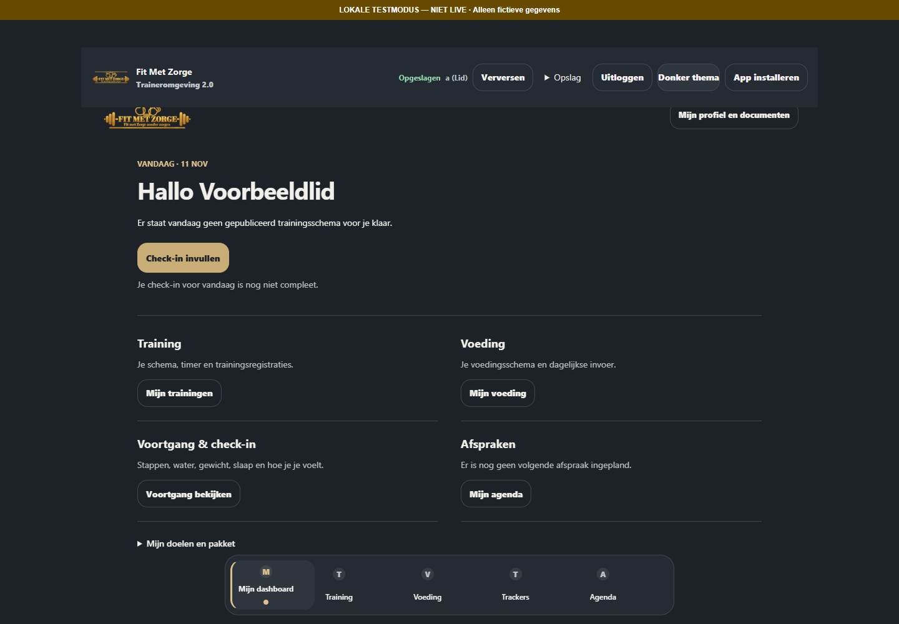
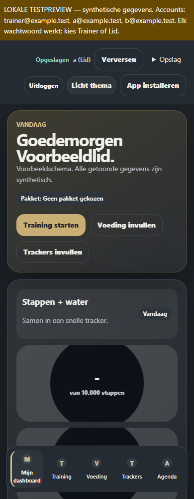
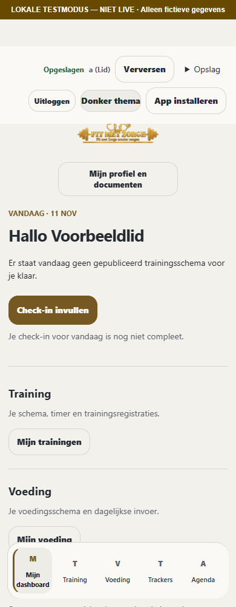
Geïsoleerde lokale branch codex/owner-navigation-balances-20261111, gebaseerd op e9463c8eb73b5ddef0760c2facf71da9af9de2ca. Correcties zijn lokale ongecommitte wijzigingen: niets gepusht of gepubliceerd. Herstelpunt en actieve versie blijven behouden. Geen migration, Auth-, Storage-, RLS- of Edge-wijziging.
Ondertekening en andere eerder geblokkeerde productieonderdelen zijn niet door deze correctie vrijgegeven. De lokale preview bewijst geen fysieke iPhone-, mailbox- of productieopslagcontrole. Productiepublicatie volgt pas na een afzonderlijke goedkeuring.